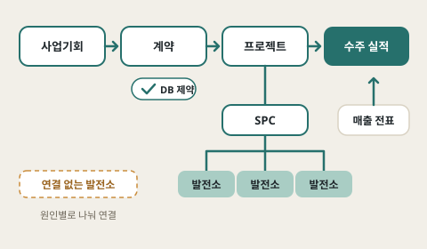

업무 자동화
메일·엑셀로 돌던 월간 실적 업무를 요청부터 DB 적재까지 자동화

2026.07 - 현재대보에너지솔루션
에너지 기업 · 선임
2024.04 - 2026.06대보디엑스
IT 서비스 기업(분할 신설 법인) · 주임
2023.12 - 2025.09대보정보통신
IT 서비스 기업 · 주임
물적분할 후 프로젝트 소속 유지로 두 법인에 동시 재적. 2026.07 그룹 내 에너지 계열사로 전적.
메일·엑셀로 돌던 월간 실적 업무를 요청부터 DB 적재까지 자동화
Linux 서버의 서비스·백업 운영, 관제 알림 기준을 로그로 다듬기
표준 사전·명명 규칙과 DB 제약으로 입력 경로와 상관없이 같은 결과
AI Claude Code·Codex로 구현하고, 직접 테스트·디버깅한 기술
 Project 01발전소 통합관제·업무 자동화O&M 사용 중
Project 01발전소 통합관제·업무 자동화O&M 사용 중 Project 02업무 서버 운영·백업운영 중
Project 02업무 서버 운영·백업운영 중
Project 03강원랜드 ERP 구축 · 자사 업무시스템 개발개발·운영 Project 04회사 홈페이지 구축 · 기획부터 조율까지내부 검토 시안
Project 04회사 홈페이지 구축 · 기획부터 조율까지내부 검토 시안 Project 05태양광 발전소 사업성 사전 검토개발 중
Project 05태양광 발전소 사업성 사전 검토개발 중 Project 06WAID · AI 세션 관리 도구개인 · v0.2.0
Project 06WAID · AI 세션 관리 도구개인 · v0.2.0Project 01
주요역할 및 기능
Project 02
주요역할 및 기능
디스크 사용률 96% → 73%systemd 자동 재시작복원 시험·재점검
Project 03
주요역할 및 기능
Project 04
주요역할 및 기능
Project 05
주요역할 및 기능
Project 06 개인 프로젝트

주요역할 및 기능